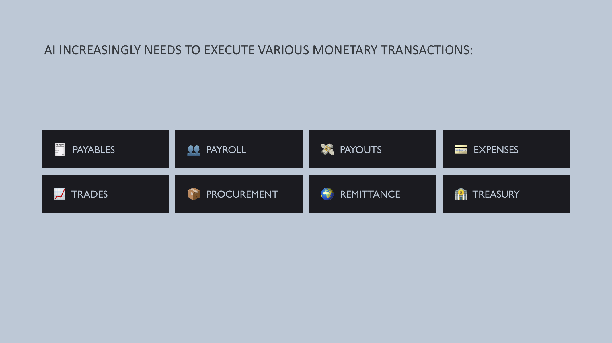
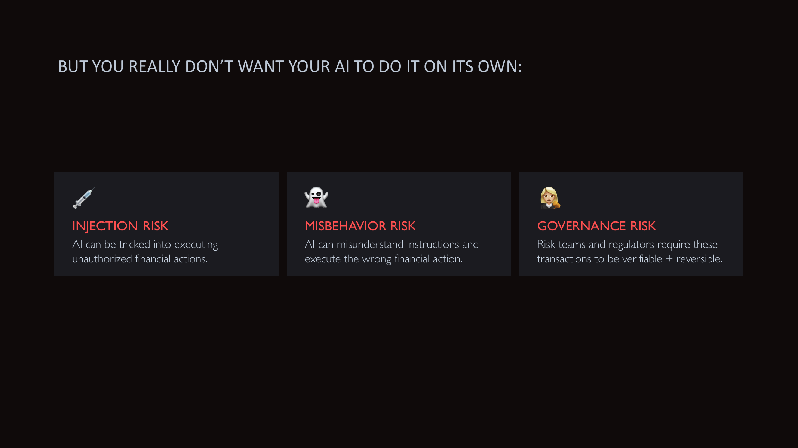
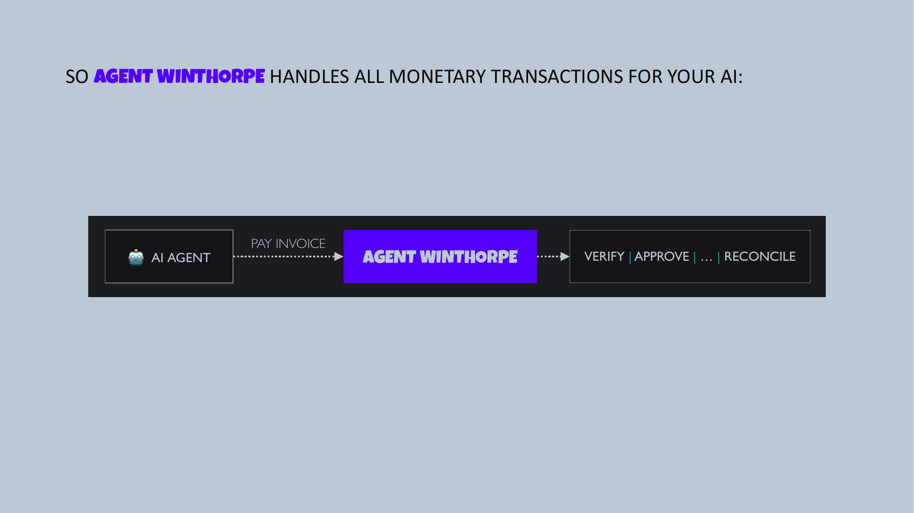
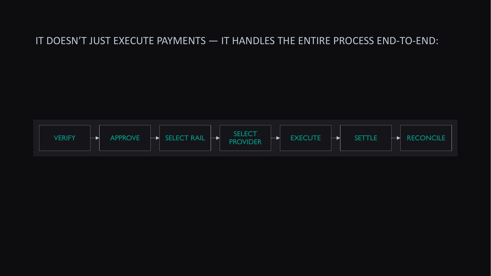
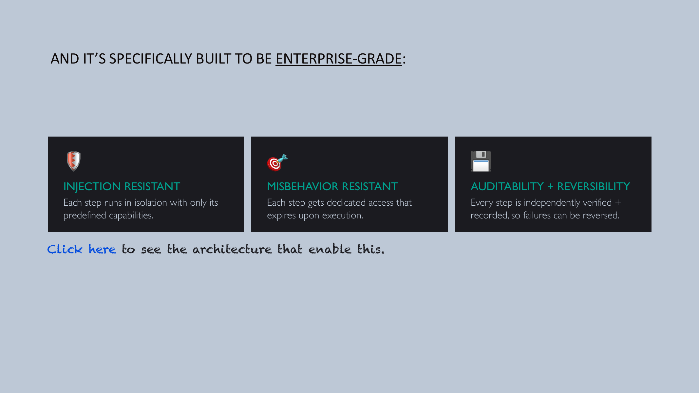
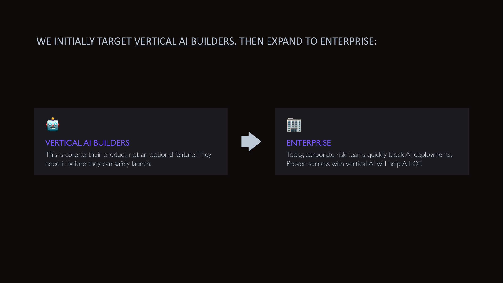
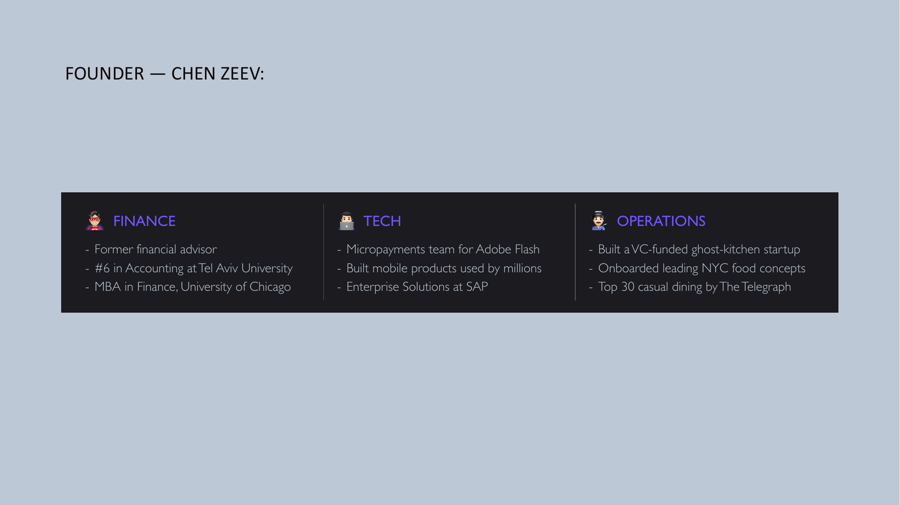

Agent Winthorpe
AI Financial Controller

AI increasingly needs to execute various monetary transactions
Payables. Payroll. Payouts. Expenses. Trades. Procurement. Remittance. Treasury.

But you really don't want your AI to do it on its own
Injection risk
AI can be tricked into executing unauthorized financial actions.
Misbehavior risk
AI can misunderstand instructions and execute the wrong financial action.
Governance risk
Risk teams and regulators require these transactions to be verifiable and reversible.

Agent Winthorpe handles all monetary transactions for your AI
AI Agent → Pay Invoice → Agent Winthorpe → Verify | Approve | … | Reconcile.

It doesn't just execute payments — it handles the entire process end-to-end
Verify. Approve. Select rail. Select provider. Execute. Settle. Reconcile.

And it's specifically built to be enterprise-grade
Injection resistant
Each step runs in isolation with only its predefined capabilities.
Misbehavior resistant
Each step gets dedicated access that expires upon execution.
Auditability + reversibility
Every step is independently verified and recorded, so failures can be reversed.

We initially target vertical AI builders, then expand to enterprise
Vertical AI builders
This is core to their product, not an optional feature. They need it before they can safely launch.
Enterprise
Today, corporate risk teams quickly block AI deployments. Proven success with vertical AI will help a lot.

Founder — Chen Zeev
Finance
Former financial advisor. #6 in Accounting at Tel Aviv University. MBA in Finance, University of Chicago.
Tech
Micropayments team for Adobe Flash. Built mobile products used by millions. Enterprise Solutions at SAP.
Operations
Built a VC-funded ghost-kitchen startup. Onboarded leading NYC food concepts. Top 30 casual dining by The Telegraph.